Uploadez votre bilan biologique en PDF, photo ou texte. L'IA analyse chaque valeur, la compare aux normes cliniques et génère un rapport structuré en 5 sections — interprétation, conclusions, recommandations — en moins de 10 secondes. Propulsé par Claude AI.
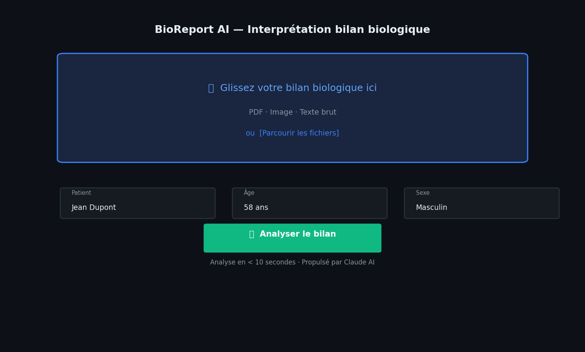
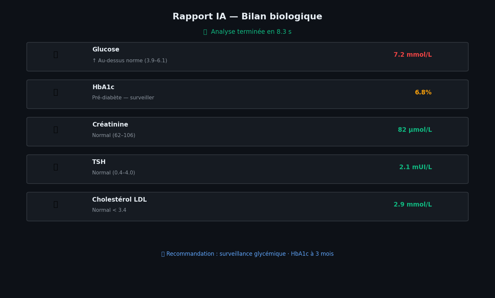
Modèle DNA-LLM basé sur Nucleotide Transformer — analyse la séquence génomique et prédit la pathogénicité de chaque variant avec une explainabilité totale via SHAP. Intégration ClinVar, classification ACMG 2024 intégrée.
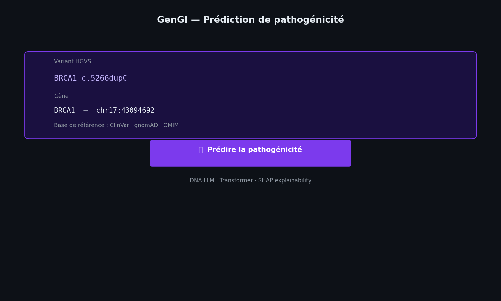
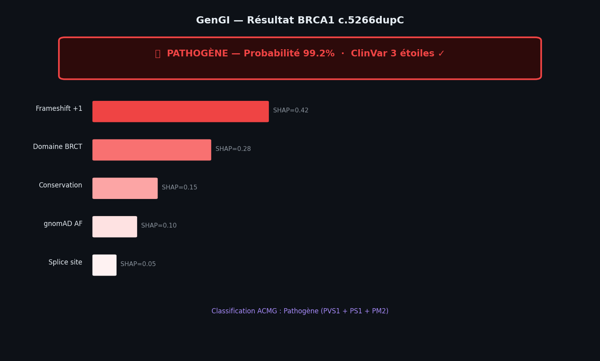
Analyse complète RNA-seq, single-cell, UMAP et classification par machine learning. Basée sur 67 études et 4 213 échantillons couvrant 12 maladies neuromusculaires — génère des rapports PDF automatisés et des graphiques publication-ready.
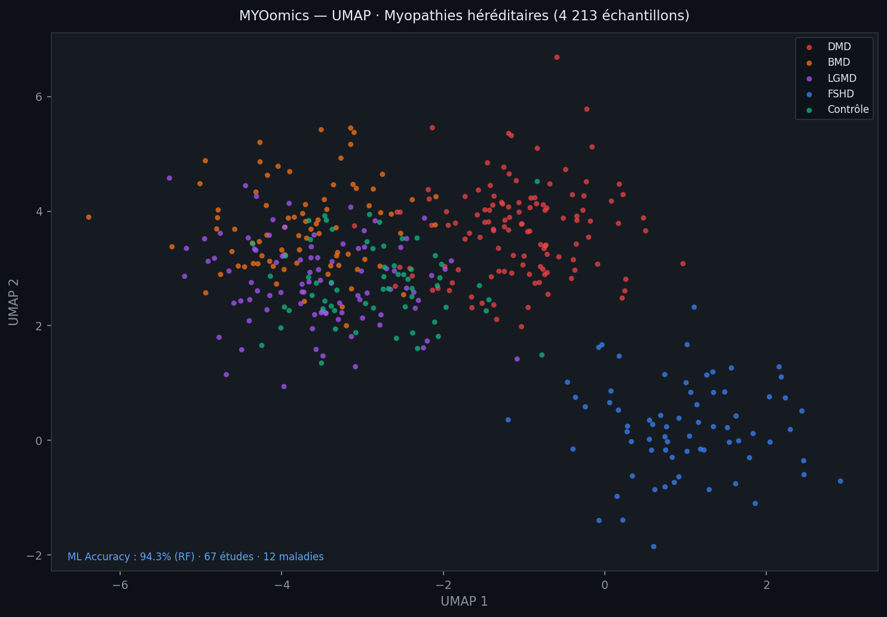
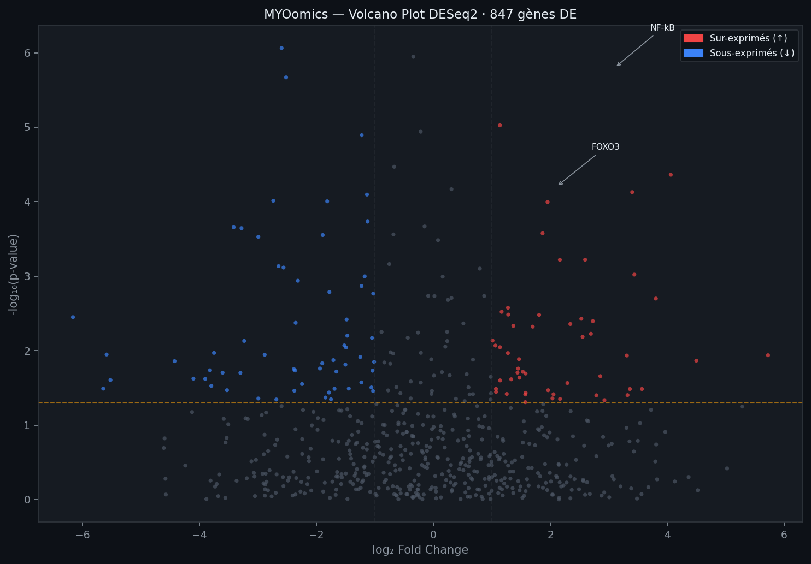
Premier agent IA clinique AMR basé sur 97 essais randomisés et 58 000+ patients. Analysez le génome bactérien complet (WGS) et obtenez un antibiogramme prédictif avec recommandation thérapeutique en moins de 5 secondes.
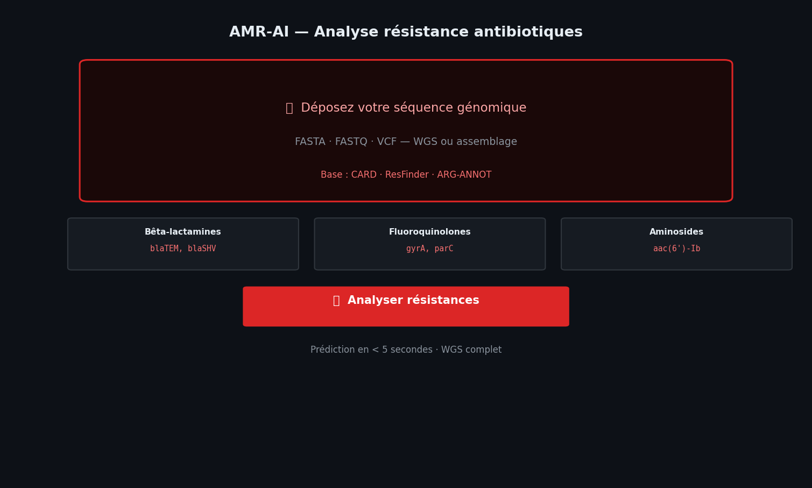
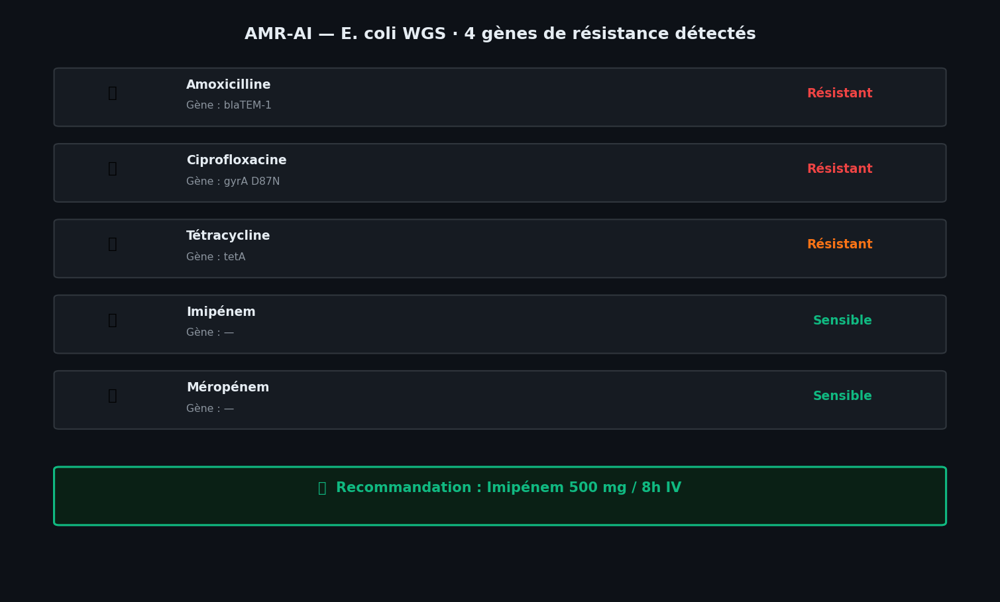
Calcul EuroSCORE II, analyse de la variabilité de la fréquence cardiaque (HRV/VFC) et prédiction de réinnervation autonome post-transplantation. Génère un compte rendu opératoire IA structuré pour la chirurgie valvulaire et la transplantation.
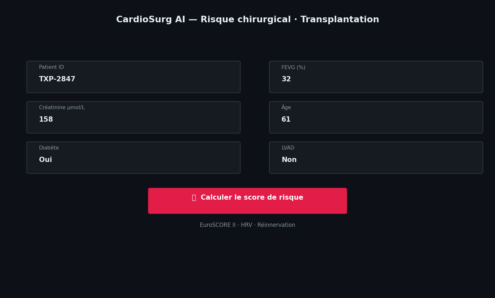
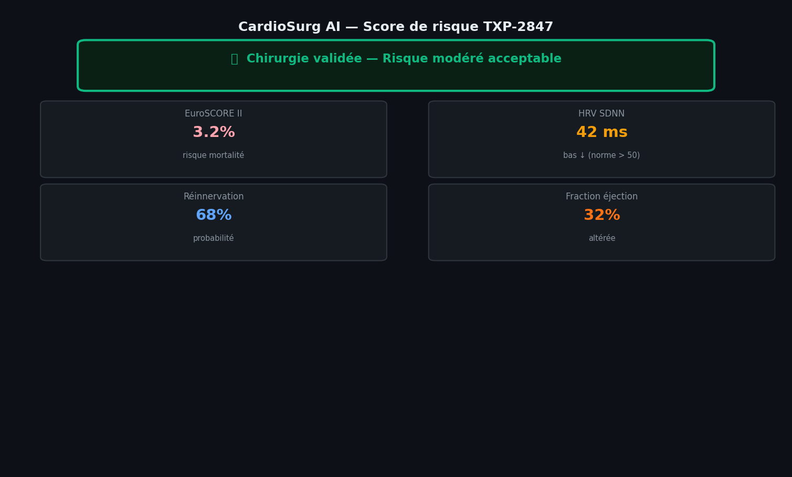
Calcul posologique adapté au poids, à l'âge et à la fonction rénale — Cockcroft-Gault intégré. Adapté à la pédiatrie, aux patients fragiles et à la post-transplantation (Tacrolimus, MMF, Prednisolone, Vancomycine). Monitoring et alertes inclus.
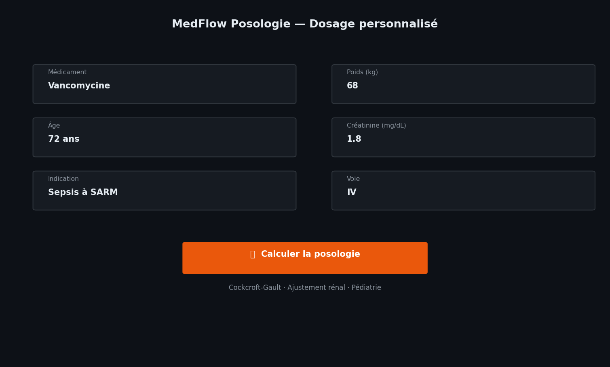
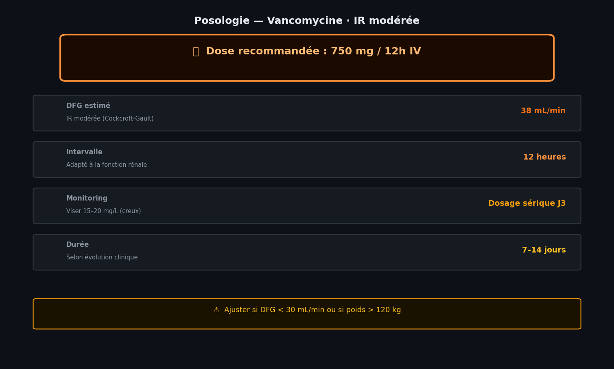
Analyse du microbiome intestinal par séquençage 16S ARNr et modèle Random Forest pour détecter 5 types de cancer (côlon, poumon, sein, prostate, pancréas). Méta-analyse de 18 études, 2 587 patients — AUC = 0.91 · bioRxiv 2026.
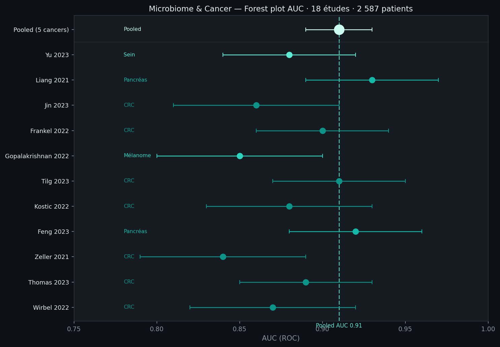
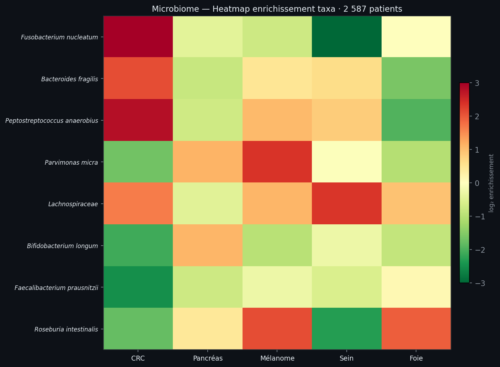
Plateforme clinique de détection des CNV par CMA chromosomique. Méta-analyse de 25 études et 79 417 patients avec 6 indications cliniques — déficience intellectuelle, autisme, anomalies congénitales, infertilité. Classification ACMG 2024 intégrée.
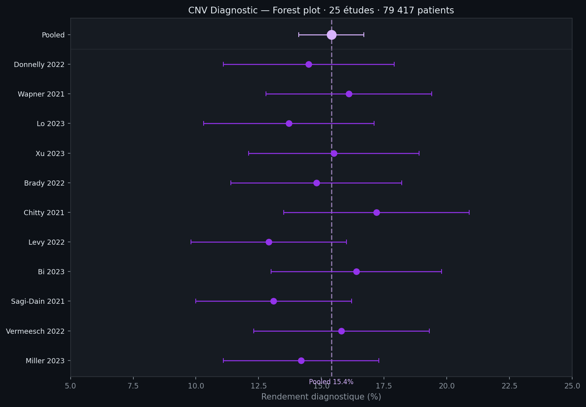
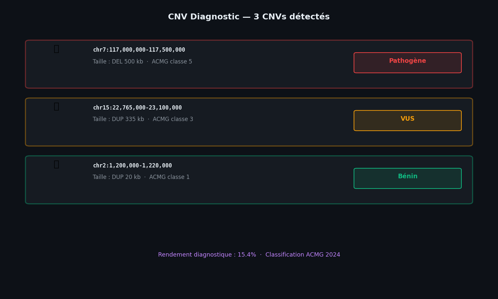
Agent IA qui analyse les ordonnances et détecte en temps réel les interactions médicamenteuses dangereuses — CYP450, QT prolongé, marges thérapeutiques étroites. Basé sur Claude API. 125 000 hospitalisations/an évitables en France.